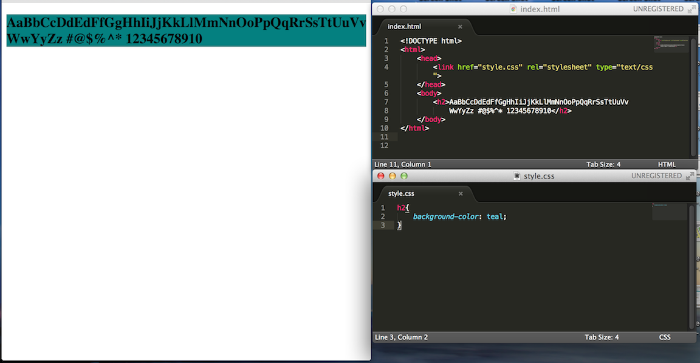
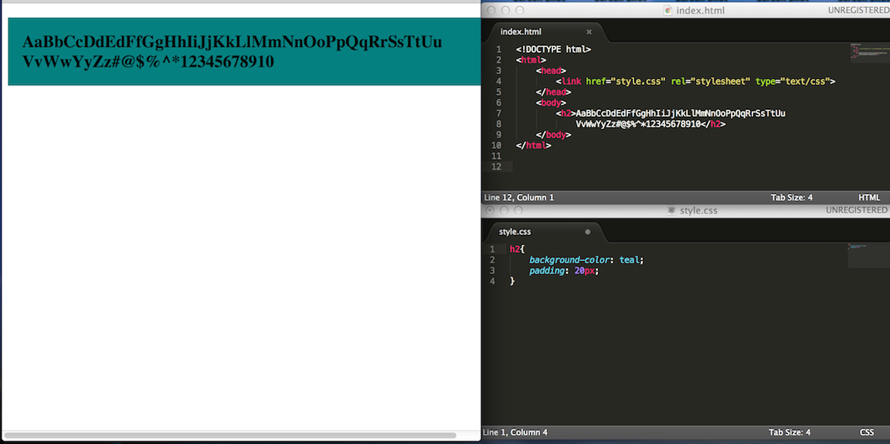
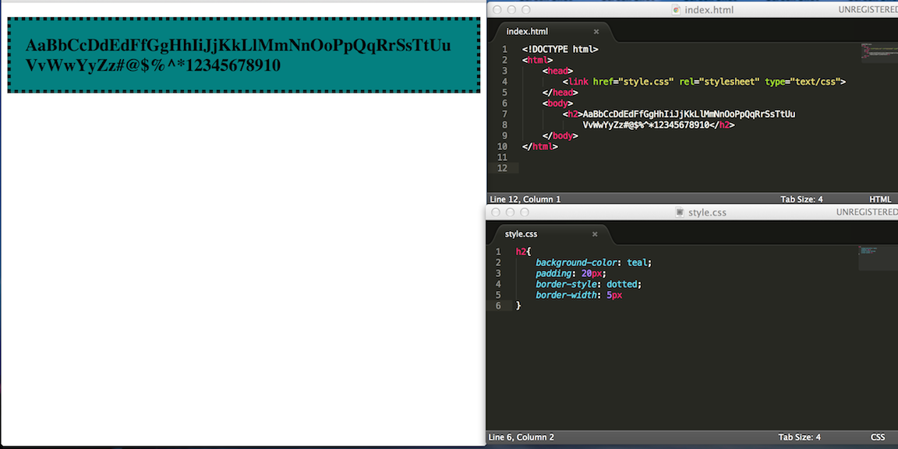
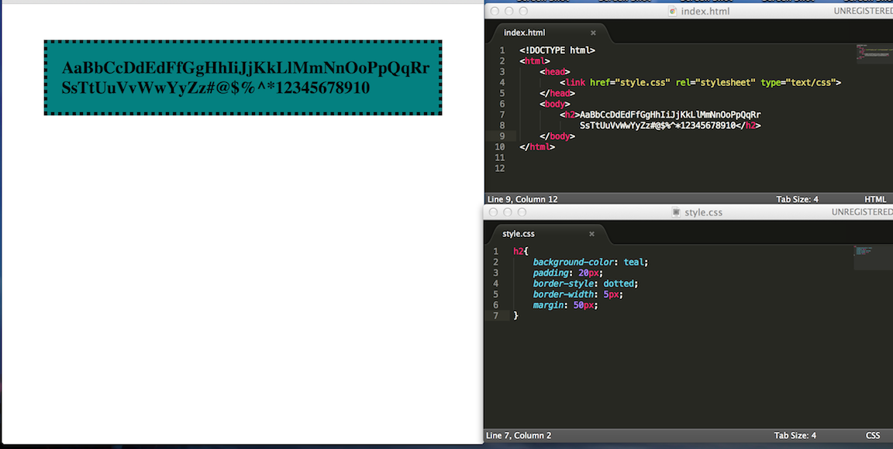

Tech Blog
This blog will attempt to try an explain the difference between margin, border, and padding in the context of CSS. Hopefully you will find this blog helpful!
First off, I believe the best way to learn something is to follow along and actually apply what you are learning. In the steps below, I have provided screenshots after each step for you to follow along. Now open up your browser, text editor with both the html and css documents.
As you can see, I have entered some text into the body of my html document. This body of text, we will call the Element Box. You will also notice that my css stylesheet is currently blank. When we open our html document in our browser, we will notice that all we see is text without any kind of formating.
By default, element boxes do not provide any space around their content. To show this, I have added some background color of 'teal' to the text so we can see that there is no space between the end of the color and the text itself, making the content look crowded. Let's fix that by adding some paddingto the text.
Padding is the space between the element box and the actual element content/text. By adding "padding: 20px" to our 'h2' tag (same tag that is associated with our text) in our CSS document, we were able to 'pad' the text. Now the text looks much better and less crowded.
Now lets talk about borders. A border is the line that surrounds the element box and is located on the outside edge of the padding (if there is any). You can have different styles than the typical black line. As you can see below, I've added 'border-style: dotted' and 'border-width: 5px' to add a dotted line and a think line of 5 pixels respectfully.
Finally, let's talk about margins. As you may have noticed in the previous screenshot, our element box along with our border is right up against the end of our computer screens. Margins is defined as the space around the element (outside the border). Typically without margins, some of our texts can easily dissapear as we scroll further to the right of the screen. Adding margins also allow better presentation of element.
To add a margin to our element box, I entered 'margin: 50px' to our h2 tag.
And that's my explaination of Padding, Borders, and Margins. Hope this helped!